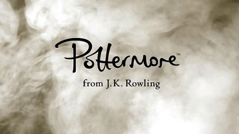
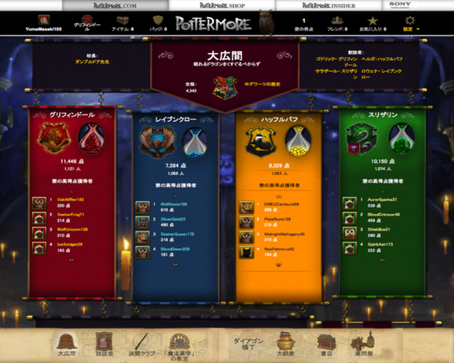

『ハリー・ポッター』シリーズについて知ろう!!
『ハリー・ポッターシリーズ』（英: Harry Potter）は、イギリスの作家J・K・ローリングによる児童文学、ファンタジー小説。
日本での通称は「ハリポタ」。1990年代のイギリスを舞台に、魔法使いの少年ハリー・ポッターの学校生活や、ハリーの両親を殺害した張本人でもある強大な闇の魔法使いヴォルデモートとの、因縁と戦いを描いた物語。
ホグワーツ魔法魔術学校には、創立者の名前にちなんだ「グリフィンドール」「ハッフルパフ」「レイブンクロー」「スリザリン」の4寮が置かれている。生徒はそれぞれの寮に分かれて生活し、同学年で同寮の生徒たちを1つのクラスとして授業を行う。同寮の生徒は「ホグワーツにいる間、家族のようなもの」である。ゴドリック・グリフィンドール、ヘルガ・ハッフルパフ、ロウェナ・レイブンクロー、サラザール・スリザリンの4人の魔女と魔法使いによって、993年頃に創設された。
創立者たちは自身の名を冠した寮を設け、好みの生徒を自身の寮に選び取るが、早い時期に彼ら自身が問題に思い当たり寮生を選ぶための組分け帽子を生み出した。
寮の選択は四人の創立者が魔法によって知恵を吹き込んだ「組分け帽子」が生徒の望む徳目や希望を取り入れた上で行い、生徒が組分け帽子を被ると生徒の望む徳目や希望を取り入れた帽子が四寮から最適の寮を宣言する。
ハリー・ポッター
本作の主人公。ヴォルデモートに命を狙われたが、歴史上唯一生き残ったため「生き残った男の子」や「選ばれし者」と呼ばれる。
額には当時受けた呪いのために出来た稲妻型の傷がある。くしゃくしゃの黒髪で母譲りの緑の目、丸い眼鏡を掛けている。
ロン・ウィーズリー
ハリーの親友。魔法界で純血家系の両親の下に生まれ育った生粋の魔法使い・ウィーズリー家の六男で、ハリーとは同学年。
ハリーともうひとりの親友ハーマイオニー・グレンジャーと共にいつも三人で行動している。ドラコ・マルフォイとは犬猿の仲である。
ハーマイオニー・グレンジャー
ハリーの親友。魔法使いでなく普通の人間、すなわちマグル出身の魔女だが、学年一の秀才。親は2人とも歯医者。
初めはハリーやロンとそりが合わなかったが、トロールに襲われているところをハリーとロンに助けられ親友となる。
ドラコ・マルフォイ
ハリーと同学年の男子生徒で、ハリーのライバル的存在。純血の名家マルフォイ家の子息。純血主義者。
誇り高く常に偉そうな態度を取り、自身に逆らう者に対しては目上の者でも卑怯な手段を用いてでも貶めようとする。
組み分け帽子
百味ビーンズ
みぞの鏡
ポリジュース薬

ポッターモア（Pottermore）はハリーポッターシリーズの世界が楽しめるウェブサイトである。誰でも無料で登録することができ、今では850万人以上の人が加入している。自分の寮や杖を決めることができ,決闘、魔法薬の調合、冒険もできる。 また、談話室や大広間でほかのポッターモアに入っている人と話したりすることができる。

現在は英語（アメリカ英語、イギリス英語）、日本語、イタリア語、フランス語、ドイツ語に対応している。
公式サイトへはこちら